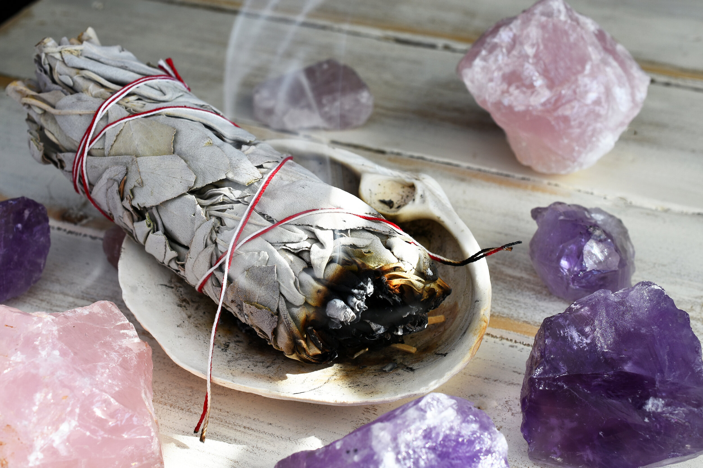

Desenvolvedores
Olá! Eu sou a Giovanna, a desenvolvedora por trás do Sálvia Branca.
Minha trajetória é movida por duas grandes paixões: a tecnologia e a harmonia com o planeta. Atualmente, sou estudante de Engenharia da Computação na Facens e trago comigo a base técnica do desenvolvimento de sistemas pela Etec.
O Sálvia Branca nasceu do meu desejo de unir esses dois mundos. Para mim, a tecnologia deve servir como uma ponte para um estilo de vida mais consciente e ético. Sou movida pelo foco e pela dedicação em tudo o que construo, e este espaço é o reflexo desse cuidado.
Mais do que falar sobre mim, este site é um convite para você explorar novas formas de existir. Espero que o conteúdo ressoe com você, e estou sempre aberta a trocas e sugestões para evoluirmos juntos.
Surgimento do Salvia Branca
O nome nasceu da busca por um símbolo que transmitisse inspiração, tranquilidade e uma conexão profunda com a natureza. A sálvia branca é ancestralmente utilizada para defumação e purificação de ambientes; para mim, o veganismo compartilha dessa essência. É um movimento de limpeza e paz, trazendo harmonia tanto para os animais quanto para os seres humanos.

A Jornada Técnica: O Resgate de uma Essência
O Sálvia Branca não é apenas um site, mas o florescimento de um projeto que plantei no meu primeiro ano de ensino médio técnico. Aquele primeiro site, simples e básico, foi meu despertar para o mundo da programação.
Hoje, como estudante de Engenharia de Computação, decidi revisitar essa ideia. Meu objetivo não era criar algo excessivamente complexo ou sobrecarregado de elementos modernos, mas sim honrar a essência minimalista daquele primeiro contato com o código, elevando-a com a técnica e a visão estética que desenvolvi ao longo do tempo.
Este espaço é o reflexo da minha evolução: um design que respira, funcionalidade com propósito e o compromisso de mostrar que a tecnologia, quando feita com dedicação, pode ser uma ferramenta poderosa para a empatia e o cuidado com o planeta.
Irei deixar algumas fotos para visualização sobre o site que usei de inspiração.
Galeria de Fotos - Projeto vegano 2022